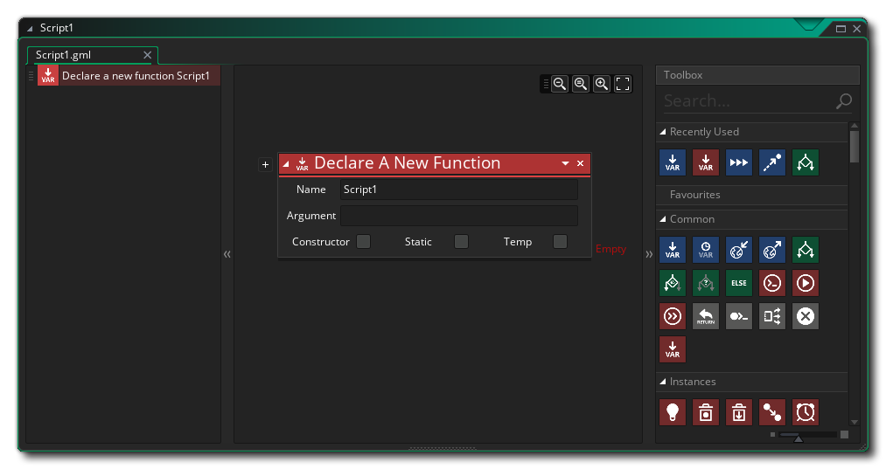
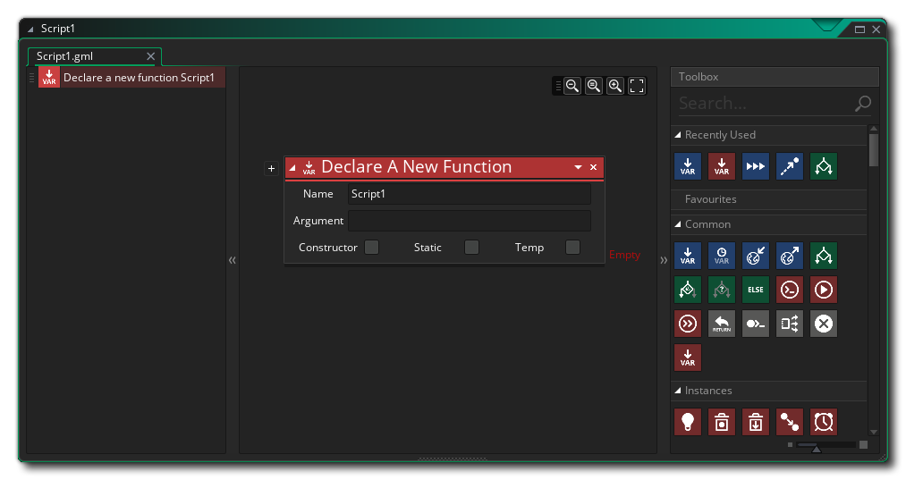
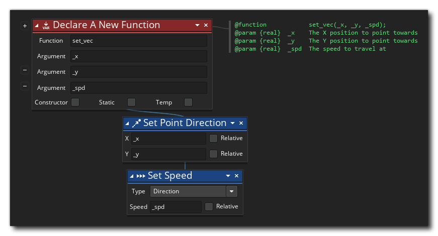
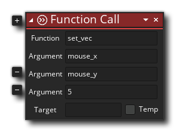
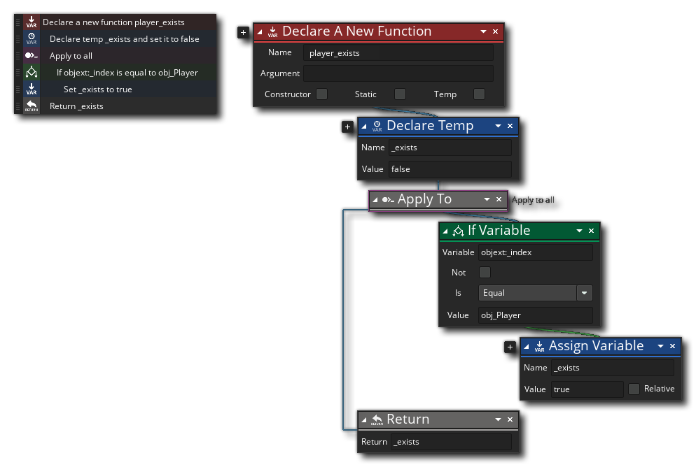
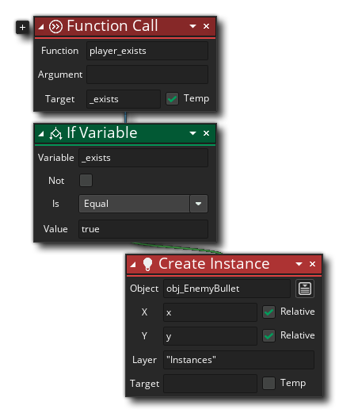

One of the most important assets in the Asset Browser is the Script asset. Scripts are special assets in that they are essentially "containers" for user defined functions and are not themselves actually called by you directly in your games. All scripts are global in scope and will be run automatically by GameMaker when your game starts, so you can use them to define global variables and functions that you want to use throughout your game.
Each DnD™ script can have one or more user-defined functions
added to it, and these functions are created using the action
Declare A New Function: 
The functions you define here will be global in scope and act
much like any built-in DnD™ action, ie: they can take different
values - or none at all - called arguments or
parameters, and then perform a task, returning a value or
returning nothing as required. You would then call the function in
your games using the Function
Call  action, which looks like this:
action, which looks like this: 
To create a DnD™ script, you simply use the right mouse button
 on the Script asset folder (or anywhere in the Asset Browser) and
select Create then Script. This will create a new
DnD™ script and open the editor window: 
on the Script asset folder (or anywhere in the Asset Browser) and
select Create then Script. This will create a new
DnD™ script and open the editor window: 
You can name the script by right clicking  on it in
the Asset Browser and selecting Rename (or by using a slow
double left click
on it in
the Asset Browser and selecting Rename (or by using a slow
double left click  ), but note that the script name
must conform to the general rules for assets, so they must
start with a letter and only contain letters, numbers or the "_"
under-bar symbol. Your script will also be pre-populated with a
Declare A New Function action, ready for you to fill it out,
and you can add more function declarations as required (a single
script can hold multiple functions, which is useful for grouping
functions with similar or connected usage together).
), but note that the script name
must conform to the general rules for assets, so they must
start with a letter and only contain letters, numbers or the "_"
under-bar symbol. Your script will also be pre-populated with a
Declare A New Function action, ready for you to fill it out,
and you can add more function declarations as required (a single
script can hold multiple functions, which is useful for grouping
functions with similar or connected usage together).
As mentioned above, you can pass a number of arguments to a function, and it will use these to perform the task you have written it for. To understand this better, take - for example - any of the built-in actions and think about how it works... you place it in an event and supply a number of values and it will make your instance do something. User-defined functions are exactly the same, with the only difference being that you write them.
When defining a new function, you give it a name and also define the name of any arguments it takes, if it takes any (functions can take no arguments or multiple arguments depending on what you require). If you give argument names, then these will be used in the actions that the function calls as local variables holding the function input values. It is also good practice to add in a comment for the action that explains what it does, following the JS Doc rules. For example, consider this function set_vec: 
To call the script above you would simply use the Call Function action, like this: 
Not only can you pass arguments into a function, but you can
also ask a function to return a value too (using the Return
 action), so you can use them to (for example) build calculating
methods or give back an instance ID after a complex collision
detection or any number of things. Please note, however, that
using return ends the function, and so no actions
placed after it has been used will be executed, and this means that
a certain amount of thought has to go into how your functions are
structured.
action), so you can use them to (for example) build calculating
methods or give back an instance ID after a complex collision
detection or any number of things. Please note, however, that
using return ends the function, and so no actions
placed after it has been used will be executed, and this means that
a certain amount of thought has to go into how your functions are
structured.
Below is a Drag and Drop function that returns a value: 
The function above simply checks all the instances in a room to see what their object_index is and if one of them is the player object the function will return true (ending the function call) or false. You would call this function like this:  So, we call the function and have it create a temporary (local) variable to store the returned value (which in this case is either true or false), and then this variable is checked and an action taken.
When making functions for your DnD™ scripts you can use all the same actions as you would when adding actions into an object event, and you can even call functions from within functions, and in this way create more "modular" action code. Building scripts with functions in this way can save you a lot of time creating the same action sequences and can also help make your action sequences easier to read and easier to debug.